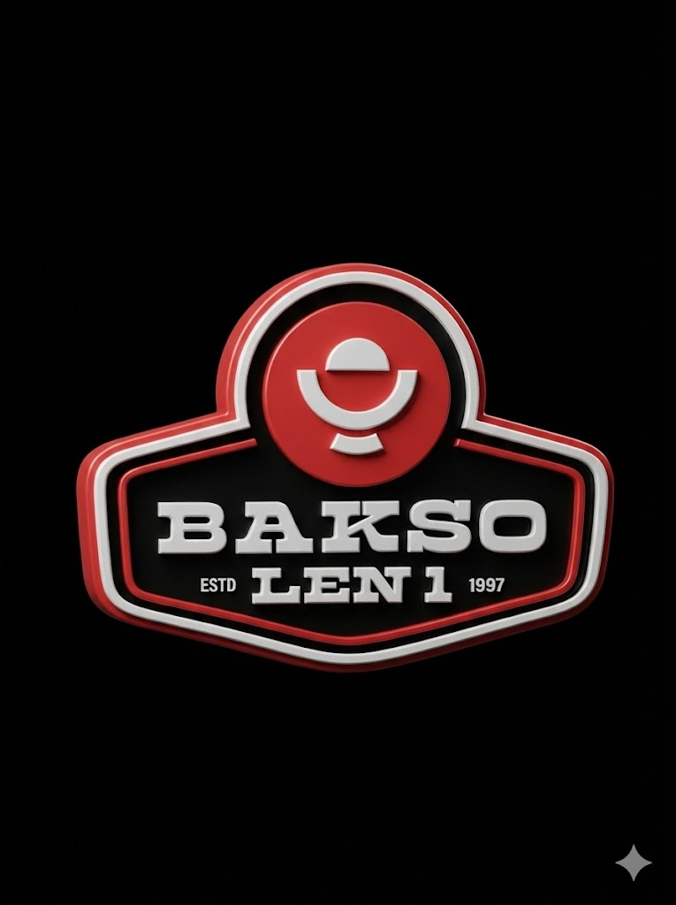

Troli Anda
1. Pilih menu · 2. Alamat & kurir · 3. WhatsApp
Alamat & kurir pilihan
Pratinjau pesan pesanan
Kurir mitra
Pilih kurir di sini atau saat checkout. Kurir akan menghubungi Anda untuk konfirmasi dan ongkos kirim.

Makan puas, harga pas · Sejak 1997
Mode pengujian pribadi. Harga dari salinan menu, kurir dari tautan uji, bukan data live. Jangan gunakan untuk pesanan pelanggan.
1. Pilih menu · 2. Alamat & kurir · 3. WhatsApp
Pilih kurir di sini atau saat checkout. Kurir akan menghubungi Anda untuk konfirmasi dan ongkos kirim.